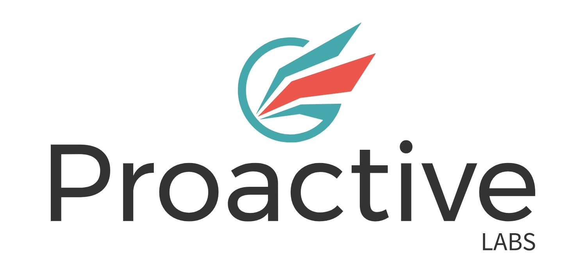

:office: Suite 78 M Centre 11 Palmerston Lane Manuka ACT 2603
:flags: Australian owned :flags: Private company
:small_blue_diamond: Visit site
Proactive Labs is a boutique cyber security company, offering a different perspective on cyber issues. We aim to help our clients in their domain, by offering our experience in ours. We are highly skilled and experienced cyber security professionals offering comprehensive, yet boutique cyber security services to businesses and organisations. With extensive professional experience, we possess an in-depth understanding of the dynamic Canberra market. To cater to its specific and unique needs, we offer tailored and customised solutions. We provide services such as penetration testing, threat emulation, code review, and bespoke research.